Servicio a domicilio
Nos desplazamos directamente hasta su empresa o lugar de trabajo.

ERS España · Taller móvil industrial
Servicio de reparación a domicilio para maquinaria industrial, sistemas hidráulicos y motores. Respuesta rápida, trabajo profesional y soluciones en el lugar.
Nos desplazamos directamente hasta su empresa o lugar de trabajo.
Atendemos su solicitud y buscamos una solución en el menor tiempo posible.
Reparación de sistemas hidráulicos, motores y maquinaria industrial.
Seis especialidades técnicas con taller móvil propio. Sin grúas, sin transportes especiales, sin semanas de parada.

Reparación integral de prensas, plegadoras, cintas transportadoras, empacadoras y centros de mecanizado sin traslado de la máquina.
Detección de fugas, latiguillos a medida prensados en furgón, distribuidores, bombas de pistones y cilindros.
Ajuste de engranajes, cajas reductoras, rodamientos, alineación láser de ejes y poleas, piñones y coronas.
Reparación de bombas centrífugas, sumergibles, de vacío y dosificadoras. Sustitución de cierres mecánicos e impulsores.
Diagnosis electrónica, puesta a punto de motores diésel industriales, bobinados de motores eléctricos y calibración de inyección.
Un procedimiento ensayado en cientos de plantas: cuatro fases, un solo desplazamiento y producción reanudada el mismo día.

Recepción directa de llamada o WhatsApp. Nuestros ingenieros evalúan la avería, el tipo de máquina y los recambios potenciales.
Asignamos la furgoneta técnica más cercana con equipamiento de mecanizado, prensado hidráulico y los repuestos necesarios.
Inspección termográfica, manométrica y endoscópica directamente en su nave o puesto de trabajo para localizar la causa raíz.
Ejecución técnica inmediata, prueba de carga en presencia del jefe de planta y entrega de informe técnico de intervención.
Llámenos directamente o abra un chat de WhatsApp con fotos y vídeos de la avería: le asignamos el técnico especialista lo antes posible.